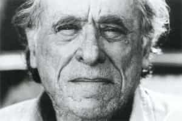

Will enjoys reading Bukowski, oil painting, playing guitar, and, as much as possible, avoiding the human horror show. You may find him playing at an open mic night though, not for approbation, but to save his own ass from madness.


Women are far more dangerous than men. Men want to get away, women want a thing called vengeance. – Charles Bukowski
Henry Charles Bukowski, was a poet, a literary giant, and an unrepentant alcoholic. Now perhaps you’re thinking “A poet? Why the hell do I need to know about a pansy-ass poet?” Bukowski would’ve wholeheartedly agreed. Bukowski hated the poets. He did not want to be lumped in with them—the pansy poets.
In a letter he wrote that “I am not primarily a poet, I hate god gooey people poets messing the smears of their lives against the sniveling world…” The academics, the poetry snobs, returned Bukowski’s disgust. They reviled him. They complained that by making poetry accessible, raw, gritty, dirty, and readable he was destroying the art form.
Bukowski’s answer was simple, it came in the form of a poem called Art. It goes something like those with no spirit, resort to form. Look it up. According to Bukowski, for writing to be something other than foolishness or pretense the words had to cut into the paper like painting–writing should be like painting, and raw so that when you turn the page your hand should come away bloody.
That was Bukowski’s motto as he churned out hundreds of poems, six novels, a screenplay, and several collections of short stories and essays.
The ladies would rather go to bed with a poet than anything, even a German police dog… – Charles Bukowski
While in high school Bukowski was afflicted with a severe case of acne vulgaris. The treatment of the condition at the time, drilling into the huge blisters on his face to drain the pus, left him with severe scarring. He’d leave the hospital with his face wrapped in bandages like the Invisible Man, scaring the women and children on L.A.’s streets and public transportation.
The scarring and his alcoholism gave him a beyond rugged appearance. He was downright ugly, so much so that a woman at a poetry reading remarked, “You’re so ugly, you’re beautiful.” The appearance of his ragged face did not matter to Bukowski—instead, he relished it, much like a Heidelberg scar.
As Bukowski’s reputation as a poet grew, despite his ugliness, he had the opportunity to be with many women. His novel Women is about his experiences with several of them. Like all of his writing it is highly readable, unpretentious, funny, and honest.
The FEMALE. There is no way. Don’t wait for the good woman. She doesn’t exist…the male, for all his bravado and exploration, is the loyal one, the one who generally feels love. -Charles Bukowski
While Bukowski’s writing is in general about existential alienation (Sartre was an admirer) and the absurdity of humanity, a recurring theme in his work is the relationship between man and woman. His story 6 Inches (you’ll never guess the twist) is a perfect allegory to the man-hating feminist movement.
The feminists of his day screamed misogyny, but Bukowski was an equal opportunity offender—the feminists, being utterly self-absorbed, self-pitying, and self-aggrandizing, missed the point, he was a self-proclaimed misanthropist. He criticized humanity as a whole and that included women.
“The great wash of humanity doesn’t interest me but it sure as hell ingests me in its horror show. I fight back with little tricks: the typewriter, the bottle, hiding out, ignoring the consensus,” he wrote. In Bukowski’s mind women were open to ridicule as much as men and humanity as a whole, and he when he got behind a typewriter or got drunk, often both at the same time, he did not hold back his contempt. I
n a correspondence he wrote, “I really do not get enough good ass and I never will because if a woman’s soul is sack of shit I will not fail to tell them so…”
You want real hell? Try living with a so-called beautiful woman. It’s a mirage that turns into a total nightmare. If you have to have a woman, look for kindness. A sense of overall reality. – Charles Bukowski
Bukowski’s outward reputation was that of a brawling drunkard, and hard-ass, but much of that was a persona he cultivated through poetry readings, he was actually very sensitive and capable of deep love. His first love was Jane Cooney Baker, a woman ten years his senior, who died of alcoholism long before Bukowski passed away due to leukemia.
His poem For Jane: With All the Love I Had, Which Was Not Enough is as powerful a declaration of a man’s love for a woman as there is in all of poetry. Bukowski got married twice. First to a wealthy publisher’s daughter (who he married sight unseen before he was a famous poet) and finally to a woman he met at one of his poetry readings after he had completed his “research” of sleeping around for his novel Women.
On his first marriage, which ended in divorce a little over two years in, he wrote to a female friend, “I thought if I can make one person happy in this world then my life has not been wasted.” Of course, marriage doesn’t work that way. His writing was the manner in which he would bring pleasure to thousands of people, though in his own words he never wrote for other people but to save his ass from the grip of madness and suicide. Nevertheless, this sentiment shows the sensitivity and romanticism in his thinking that would express itself in his poetry.
Don’t try – Charles Bukowski

Thanks to Bukowski men can read poetry and literature that isn’t soft, slick, false, and crafted to read a certain way. Bukowski’s idol Hemingway was the precursor to the raw, scintillating, moving, humorous brand of men’s literature that Bukowski has left us.
No one wrote like Bukowski before Bukowski and no one has written as well since.
Read More: Society Is Oblivious To The Warnings Of Literature
{kind=link}
{kind=link}